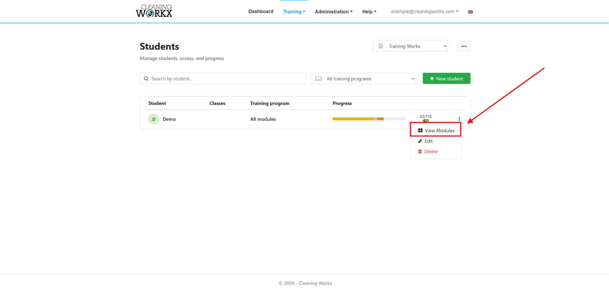
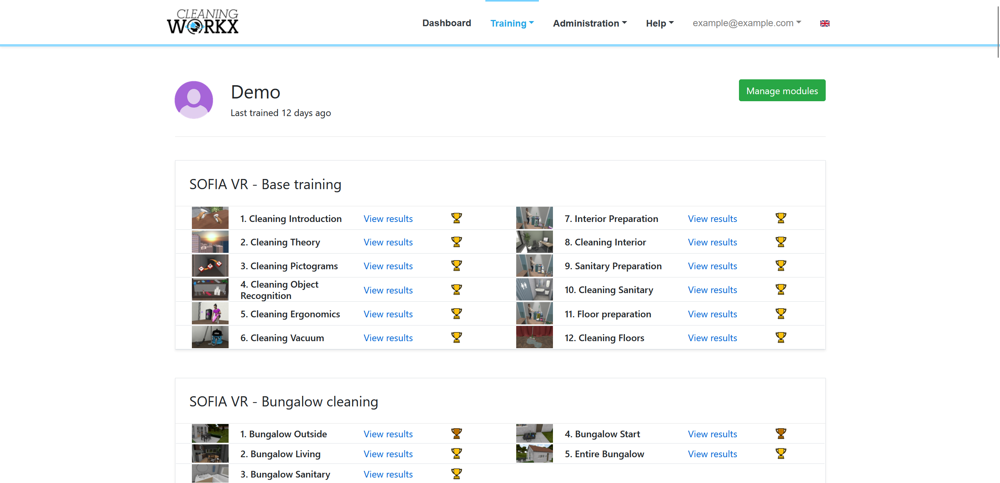
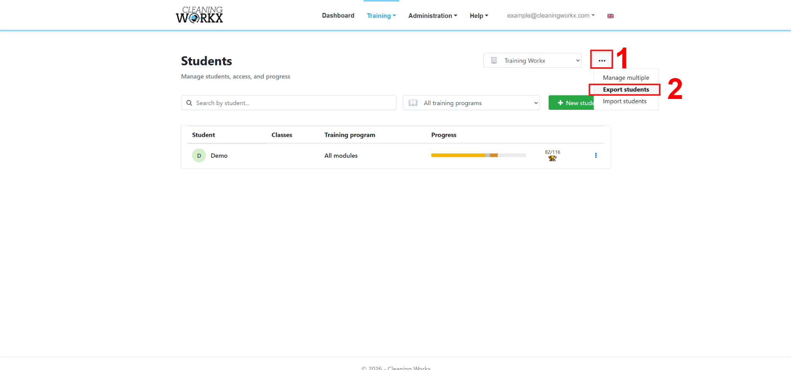
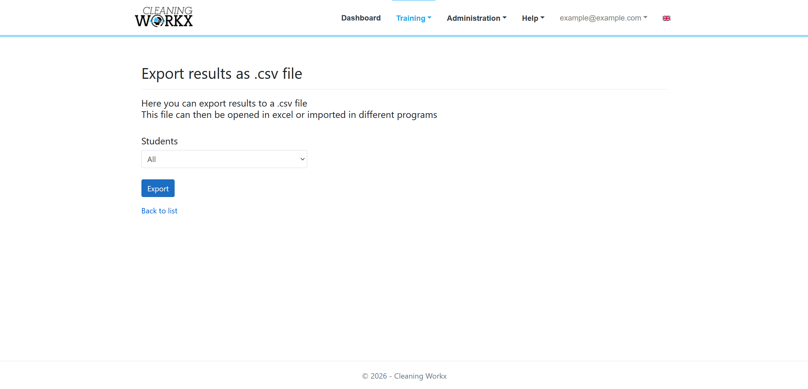

Ergebnisse anzeigen
Im Training Workx-Portal können Trainer den Fortschritt und die Ergebnisse jedes Teilnehmers einsehen.
Die Ergebnisse zeigen, wie oft ein Teilnehmer trainiert hat, welche Module abgeschlossen wurden und welche Punktzahlen erreicht wurden.
Sie erreichen das Portal unter:
- Logistic Workx: portal.logisticworkx.com
- Cleaning Workx: portal.cleaningworkx.com
Den Fortschritt eines Teilnehmers anzeigen
- Melden Sie sich im Training Workx-Portal an.
- Gehen Sie zu Training → Teilnehmer.
- Suchen Sie den Teilnehmer, den Sie ansehen möchten.
- Klicken Sie auf Module anzeigen.
Sie sehen jetzt, welche Module der Teilnehmer abgeschlossen hat und wie weit er aktuell ist.

Modulergebnisse anzeigen
So sehen Sie die detaillierten Ergebnisse für ein bestimmtes Modul:
- Öffnen Sie die Modulliste des Teilnehmers.
- Klicken Sie beim Modul auf Ergebnisse anzeigen.
Die Ergebnisseite zeigt:
- Wie oft das Modul gespielt wurde
- Die Art der Sitzung (Training oder Prüfung)
- Die erreichte Punktzahl
- Den Fortschritt des Teilnehmers im Zeitverlauf

Ergebnisse exportieren
Bei Bedarf können Sie die Ergebnisse für eine weitere Auswertung exportieren.
- Gehen Sie zur Seite Teilnehmer.
- Drücken Sie auf die 3 Punkte neben der grünen Schaltfläche Neuer Teilnehmer.
- Exportieren Sie die Ergebnisse als .csv-Datei.
Diese Datei können Sie in einer Tabellenkalkulation öffnen, um Berichte zu erstellen oder die Ergebnisse zu archivieren.

